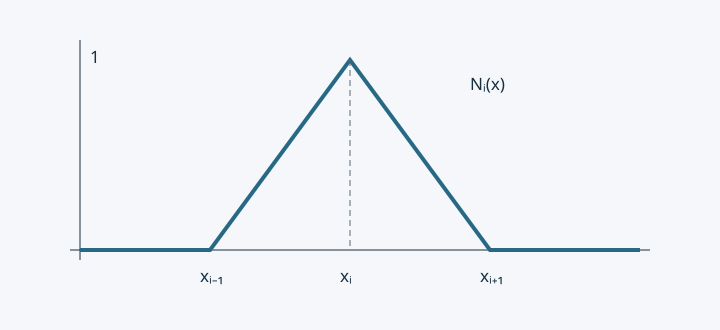

05 · 一维有限元：单元分析、装配与求解（笔记 P5–P7）#
2026-10-20 核查版：核心内容对照现有课堂 PDF；本篇中的参考书章节号沿用旧稿，尚未逐项核实，只作查找线索。推导和例子中的解释补充不等于教师原话。
对应原始笔记：原图/笔记-05.jpg、原图/笔记-06.jpg、原图/笔记-07.jpg
（P5–P6 主要是黑板照片：单元内的插值多项式、单元刚度矩阵积分、高斯积分；
P7 是"装配 → 求解 → 后处理 → 讨论 → 二次插值"）
这就是有限元的标准流程，一共六步。老师把它写成
"1° 构造广义解形式 2° 离散 3° 单元分析 4° 装配 5° 求解 6° 后处理"。
一、课堂内容规范化整理（非逐字）#
1. 离散（P6 上半页）#
i=1∑n∫eiESdxdudxduˉdx=i=1∑n∫eiρgS(x)uˉ(x)dx+Puˉ(L)
"单元上的积分 = 单元贡献之和"，这就是后面装配的依据。
2. 单元 e_i ∈ [x_{i-1}, x_i] 上的插值（P6 中部）#
u(x)=[Ni−1(x)Ni(x)][ui−1ui]=[N(x)]e{u}e
uˉ(x)=[Ni−1(x)Ni(x)][uˉi−1uˉi]=[N(x)]e{uˉ}e
dxdu(x)=dxd([Ni−1(x)Ni(x)][ui−1ui])=[dxdNi−1(x)dxdNi(x)][ui−1ui]=[−li1li1]{u}e=[B(x)]e{u}e
(dxdu)(dxduˉ)=([B]{u})T([B]{uˉ})={u}T[B]T[B]{uˉ}={uˉ}T[B]T[B]{u}
∫eiESdxdudxduˉdx={uˉ}eT(∫ei[B]TES[B]dx){u}e={uˉ}eT[liES[1−1−11]]{u}e（单元刚度矩阵）
∫eiρgSuˉdx={uˉ}eT[ρgSli/2ρgSli/2]（单元载荷向量）
端部集中力项（uˉ(L) 只与最后一个单元的两个形函数有关）：
Puˉ(L)=uˉ(L)P=[uˉn−1uˉn][0P]
3. 装配、求解、后处理（P7 上半页）#
第 4 步 装配总刚度矩阵，处理边界条件
第 5 步 求解
[A]−1[A]{u}=[A]−1{f}⟹{u}=[A]−1{f}⟹u0,u1,⋯,un
第 6 步 后处理（在单元内恢复连续解）
u(x)=[Ni−1(x)Ni(x)][ui−1ui],x∈[xi−1,xi],i=1,⋯,n
讨论
- 光滑系数下经典强解可取 u(x)∈C2[0,L]，而
uˉ(x)=[N(x)]{u} 只能满足 C0[0,L]；
- 如何减小误差？（a）加密网格；（b）采用高阶插值。
κ2(A)=λminλmax(A 对称正定)（条件数）
网格太密 ⇒ Cond(A) 增大 ⇒ 舍入误差恶化。
4. 如果采用二阶插值形函数（P7 下半页）#
N1(x)=(x1−x2)(x1−x3)(x−x2)(x−x3),N2(x)=(x2−x1)(x2−x3)(x−x1)(x−x3),N3(x)=(x3−x1)(x3−x2)(x−x1)(x−x2)
一般地（m 个插值节点）：
Ni(x)=1≤j≤m, j=i∏xi−xjx−xj
单元数与节点数：共 n 个单元、2n+1 个节点。
u(x)=[N1(x)N2(x)N3(x)]u1u2u3,dxdu=[dxdN1dxdN2dxdN3]{u}e=[B(x)]e{u}e(1×3)
Ke=∫ei(dxdN)TES(dxdN)dx⟹3×3 单元刚度矩阵
二、补充推导（笔记的括号里只有结论）#
2.1 线性形函数是怎么来的#
在单元 [xi−1,xi] 上做线性插值（Lagrange 一次），要求 Ni−1(xi−1)=1,Ni−1(xi)=0：
Ni−1(x)=lixi−x,Ni(x)=lix−xi−1,li=xi−xi−1
两条基本性质（后面一直用）：
- 单位分解：Ni−1(x)+Ni(x)≡1 ⟹ 常数位移（刚体平移）能被精确表示，
而且刚度矩阵每行之和为零；
- Kronecker 性质：Nk(xj)=δkj ⟹ 待定系数 {u}e 的物理意义就是节点位移。

图中一个节点的系数只影响与它相邻的单元，这使总矩阵稀疏。
2.2 单元刚度矩阵（最关键的一个积分，务必亲手算一遍）#
[B]e=[−li1, li1]⟹[K]e=∫xi−1xi[B]TES[B]dx=liES[1−1−11]
（E,S,li 为常数时 [B] 是常矩阵，可直接提出积分号，∫dx=li。）
物理意义：这个矩阵是把"弹簧刚度"用矩阵写出来的结果——
- 对角线元素 lES 是"拉住两端"的刚度；
- 非对角元素 −lES 是"一端拉、另一端被拉回"的耦合；
- 行和为 0 说明：两端位移相等时单元不产生内力。
2.3 右端项（载荷向量）与集中力#
{f}e=∫xi−1xiρgS[Ni−1Ni]dx=[ρgSli/2ρgSli/2]
即"均布荷载各分一半到两个节点"——这就是笔记 P4 离散模型里 21ρgSli 的来源。
端部集中力 P 的贡献 Puˉ(L)={uˉ}eT[0,P]T 直接放到最后一个单元的载荷向量里。
2.4 装配（把 n 个 2×2 矩阵拼成 (n+1)×(n+1) 矩阵）#
i=1∑n{uˉ}eT[K]e{u}e={uˉ}T[A]{u},i=1∑n{uˉ}eT{f}e={uˉ}T{f}
由于 {uˉ} 任意，得到 [A]{u}={f}。装配规则很机械：
单元 ei 的第 1 个自由度对应全局第 i−1 个、第 2 个对应全局第 i 个，
把 [K]e 的四个元素"投"到全局矩阵的相应位置并累加。得到的 [A] 是三对角、对称的：
[A]=l1ES−l1ES−l1ESl1ES+l2ES⋱−l2ES⋱−lnES⋱lnES(n+1)×(n+1)
（与 P4 的节点力平衡方程完全一致——装配出来的方程就是平衡方程，这说明有限元格式是"物理正确"的。）
2.5 边界条件与求解#
u0=0 是第一类边界条件。处理方式（同 P3 的三种做法）中最常用的是划行划列 / 改对角：
[100[A′]⋯][u0u′]=[0f′]
解出 {u} 后，用分片插值恢复连续解：u(x)=[N(x)]e{u}e，x∈[xi−1,xi]。
这就是"后处理"——它和差分法里那句 T(x) 分片线性恢复完全一样（P2 最后一行）。
三、讨论（P7 两个问题，值得单独说）#
3.1 光滑性矛盾：C2 的方程 vs C0 的近似解#
- 光滑系数下经典强解可取 u∈C2[0,L]；
- 分片线性插值 u=[N]{u} 在节点处一阶导数不连续，只能达到 C0。
这不是矛盾，而是弱形式的作用：弱形式只要求一阶导数（平方可积），
分片线性函数完全合格。代价是：数值解在节点处的应力 σ=Eu′ 是间断的——
所以工程上常说"位移解精度高于应力解精度"（应力需要额外做平均/恢复，见 P11 后处理）。
3.2 两种提高精度的策略（h 方法与 p 方法）#
| 策略 |
做法 |
误差衰减 |
代价 |
| h 方法 |
加密网格（h 变小） |
线性单元 O(h2)（L2 意义），节点值可到 O(h2) |
未知量变多、条件数变差、舍入误差上升 |
| p 方法 |
提高插值次数（二次、三次单元） |
光滑解可有指数收敛 |
单元矩阵变大、需要更多积分点 |
笔记 P7 下半页的“二阶插值”就是提高插值次数。表中误差阶还要求解足够光滑、网格形状规则；指数收敛需要更强的解析性条件。
3.3 条件数为什么"很关键"#
κ2(A)=λminλmax(A 对称正定)
对一维线性单元的标准结果（n 个单元、h=L/n）：
λmax≈h4ES,λmin≈hES⋅4n2π2⟹Cond(A)=O(n2)=O(h−2)
于是：网格加密一倍，条件数变差 4 倍。相对误差的粗略估计是
∥u∥∥δu∥≲Cond(A)⋅εmachine，
而双精度 ε≈2×10−16，若 κ2=1010，最坏情形可损失约 10 位十进制有效数字，是否可接受取决于精度要求；
但三维问题或病态边界条件时就必须小心。这就是笔记"网格太密 ⟹ Cond 大 ⟹ 舍入误差不佳"的意思。
对策：迭代法（CG 只需矩阵向量乘，且可用预处理）、多重网格、或改用更高阶单元（在同样精度下节点数更少）。
四、二次（二阶）插值单元#
每单元取 3 个节点（两端 + 中点），用二次 Lagrange 插值：
Nk(x)=j=1,j=k∏3xk−xjx−xj,k=1,2,3
性质与线性情形一致：N1+N2+N3≡1，Nk(xj)=δkj。
此时
[B]e=[dxdN1,dxdN2,dxdN3](1×3),[K]e=∫ei[B]TES[B]dx=3lES7−81−816−81−87
（l 为单元长度；这里补写显式系数，并用数值积分独立核验。注意它的行和为 0，
且在 u1=u2=u3 时不产生内力。）
单元数与节点数：n 个单元、2n+1 个节点（自由度 2n+1）。
与线性单元相比，同样的节点数下精度高一阶：线性单元在 L2 意义下是 O(h2)、能量范数 O(h)；
二次单元分别是 O(h3) 与 O(h2)。
数值积分（黑板上写的公式）：[B]T[B] 是多项式，可以不精确积分；
一般用两点 Gauss 积分（对三次以下多项式精确）：
∫x1x3f(x)dx≈2x3−x1[f(xg,−)+f(xg,+)],xg,±=2x1+x3±23x3−x1
五、常见误区#
- [B] 是行阵、[K]e 是方阵：线性单元 [B]1×2，[B]TES[B]2×2；
二次单元分别是 1×3 和 3×3。笔记里"1×3 若 k 与 x 无关"就是在提醒这件事。
- [N] 与 [B] 的关系：[B]=d[N]/dx，别把位移插值和应变插值混为一谈。
- 装配 ≠ 简单相加：是按局部-整体编号映射叠加，共用节点上的刚度要相加（P9 的"局部/整体编号"就是讲这个）。
- 不要把 A−1 当成算法：笔记写 u=A−1f 只是符号表达；实际用追赶法或迭代法。
- 在固定浮点精度下评估网格加密效果：精度受离散误差和舍入误差的双重制约（见 3.3）。
六、复习要点#
- 能独立写出线性形函数并验证单位分解与 Kronecker 性质。
- 能完整算出 [K]e=lES[1−1−11] 与 {f}e=2ρgSl[11]。
- 能写出装配后的三对角矩阵，并说明"行和为 0"的物理含义。
- 能说清条件数 O(n2) 的结论及其对舍入误差的影响。
- 能写出二次 Lagrange 形函数，并说明 [B]、[K]e 的阶数变化。
七、预习衔接#
下一节（P8–P12）把这一套流程推广到更一般的方程和二维：
- 一般二阶 ODE：−dxd(pdxdu)+qu=f，
会多出 ∫quuˉdx 这一项（→ [N]Tq[N] 也是对称阵）；
- 二维 Poisson：∇⋅(k∇u)+f=0，弱形式要借助 Gauss/Green 公式（不是简单分部积分）；
- 二维单元：矩形双线性（4 节点）→ [B]2×4、[K]4×4e；
- 数据结构：
node 文件与 elem 文件（节点编号、单元连接关系）。
预习工具：
- Green 公式/散度定理（P10 的核心）；
- 双线性插值 Ni(x,y)=Ni(x)Ni(y)（矩形单元）；
- 教材：姜礼尚第二章（插值与基函数）、第三章（剖分与单元）。